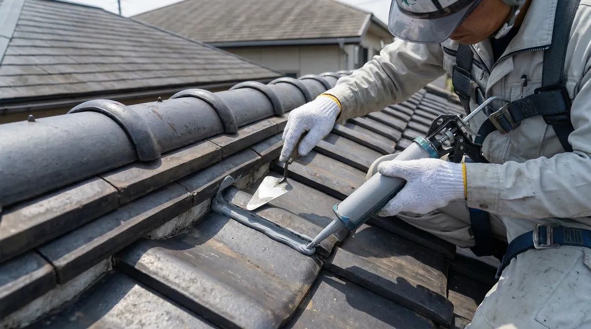

雨樋の詰まりが雨漏りの原因に？掃除方法と修理費用の相場【放置NG】

「雨樋から水があふれている」「雨樋のあたりから雨漏りしている気がする」——雨樋は普段あまり気にしない部分ですが、詰まりや破損を放置すると雨漏りの引き金になることがあります。
この記事では、築25年の実家で雨漏りを経験した管理人が、雨樋の詰まりが雨漏りにつながる仕組みと、自分でできる掃除の範囲、修理・交換費用の相場をまとめました。「雨樋、詰まってるかも」と思ったときの判断材料にしてください。
雨樋の詰まりが雨漏りにつながる仕組み
雨樋は、屋根に落ちた雨水を集めて地面や排水管に流すための部材です。落ち葉やゴミで雨樋が詰まると、行き場を失った雨水が雨樋からあふれて外壁や軒先に流れ落ちるようになります。
この状態が続くと、本来雨がかからない部分の外壁が常に濡れることになり、外壁のひび割れやシーリングの劣化部分から雨水が浸入しやすくなります。また、雨樋自体が歪んだり外れたりしていると、軒裏（屋根と外壁の接合部）に水が回り込み、そこから室内に雨漏りすることもあります。「屋根そのものは傷んでいないのに雨漏りする」ケースの中には、雨樋の不具合が原因になっているものも少なくありません。
雨樋が詰まる・壊れる主な原因
① 落ち葉・ゴミの蓄積
近くに木がある家では、落ち葉が雨樋に積もって詰まりの原因になります。花粉や砂ぼこりが泥状に固まって排水口をふさいでしまうこともあります。
② 継ぎ手・金具の劣化
雨樋をつなぐ継ぎ手や、雨樋を屋根に固定する金具（支持金具）は、紫外線や雨風で経年劣化します。金具が緩むと雨樋全体が歪み、水がうまく流れずに詰まりやすくなることがあります。
③ 積雪・強風による変形
雪の重みで雨樋がたわんだり、台風などの強風で雨樋が外れたり割れたりすることもあります。変形した部分に水が溜まりやすくなり、詰まりや破損が進みます。
④ 経年劣化によるひび割れ
塩化ビニール製の雨樋は紫外線で徐々に硬化し、年数が経つとひび割れが生じやすくなります。ひび割れ部分から水が漏れ出すと、詰まっていなくても外壁の濡れや雨漏りの原因になることがあります。
自分で判断せずプロの無料調査へ
※調査・見積もり無料。雨樋が原因かどうかの診断だけでも相談できます。
自分でできる雨樋掃除の方法と限界
雨樋の掃除自体は、条件が整えば自分で行うことも可能です。ただし、雨樋は屋根の軒先という高所にあるため、安全面のハードルは低くありません。
- 1階の雨樋でも地上から数mの高さがあり、脚立での作業には支えてくれる人が必要です
- 2階以上の雨樋の掃除は、転落すると大きな事故につながるおそれがあります
- 軍手・ゴム手袋をして、たまった落ち葉やゴミを手やブラシで取り除くのが基本的な方法です
- 排水口（集水器から縦樋への入り口）に特にゴミが溜まりやすいので、そこを優先して確認します
掃除をしても詰まりが解消しない場合や、雨樋自体が歪んでいる・外れている場合は、掃除では直せません。無理をして屋根に登ろうとせず、業者に任せるのが安全です。特に2階以上の戸建てや、屋根の勾きが急な住宅では、最初から業者に依頼することをおすすめします。
雨樋の修理・交換費用の相場
雨樋の修理費用は、どこまでの範囲を直すかで大きく変わります。あくまで目安ですが、一般的に紹介されている費用感は次のとおりです。
| 工事内容 | 費用目安 |
|---|---|
| 金具・継ぎ手の部分修理 | 1箇所あたり数千円程度 |
| 雨樋（パイプ）の部分交換 | 1mあたり1万円前後 |
| 雨樋全体の交換 | 足場代を含めて20万〜40万円程度 |
※あくまで一般的な目安です。建物の形状・雨樋の長さ・足場の必要性などによって変わるため、正確な金額は現地調査・見積もりで確認してください。
雨樋全体の交換になると、足場の設置費用が全体の費用の中で大きな割合を占めることが多いとされています。外壁塗装や屋根塗装を予定している場合は、足場を共有できるタイミングで雨樋の修理・交換も一緒に行うと、トータルの費用を抑えやすくなります。
症状に気づいたときにやること
雨樋のトラブルに気づいたら、次の手順で確認・対応するとスムーズです。
- 大雨の日に、外壁を伝う水や軒先からの水だれがないか、安全な場所から観察する
- 気になる箇所をスマホで撮影しておく（業者に相談する際に役立ちます）
- 無理に自分で屋根に登って確認・修理しようとしない
- 調査・見積もり無料の業者に、雨樋を含めて建物全体を見てもらう
雨樋だけを直しても、実は屋根や外壁にも別の劣化が進んでいた、ということもあります。雨漏りの応急処置と合わせて、原因調査は雨樋だけでなく建物全体で行ってもらうと安心です。
よくある質問
雨樋の掃除はどのくらいの頻度ですればいいですか？
近くに落葉樹がある場合は年に1〜2回（秋の落葉後、梅雨前など）、特に木が少ない環境でも年1回程度の確認がすすめられることが多いです。台風や大雪の後は、詰まりや変形が起きていないか確認しておくと安心です。
雨樋のつまりは自分で直せますか？
地上から手が届く範囲や、低い場所の落ち葉を取り除く程度であれば自分でできる場合もあります。ただし高所での作業は転落の危険があるため、2階以上の雨樋や、歪み・破損がある場合は業者に依頼することをおすすめします。
雨樋の修理は火災保険の対象になりますか？
台風や強風、雹など自然災害が原因で雨樋が破損した場合は、火災保険の対象になることがあります。ただし経年劣化が原因の場合は対象外になるのが一般的です。適用の可否を判断するのは保険会社のため、まずは保険会社に確認してください。
雨樋を直さずに放置するとどうなりますか？
あふれた水で外壁の劣化が進んだり、軒裏に水が回って雨漏りに発展したりすることがあります。雨樋単体のトラブルのうちに直しておくほうが、結果的に修理範囲を小さく抑えられることが多いです。